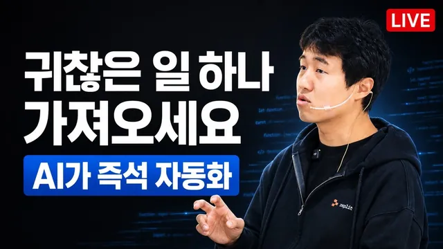

시청자의 반복 업무를 라이브에서 바로 AI로 자동화해드립니다. 귀찮은 일 하나 적어보세요.

원본 영상 보기 →
- AI 리터러시 격차는 생각보다 훨씬 크다
- 막힌 사이트를 뚫는 것은 도구 선택의 문제다
- 툴 공부가 목적이 되면 본말전도다
한 줄 요약
윤자동(AI 자동화 전문가)이 2시간 20분짜리 유튜브 라이브에서 데스크톱 정리부터 카카오톡·쓰레드·이메일·홈택스 세금계산서·유튜브 썸네일 제작까지, 시청자가 요청한 반복 업무를 클로드 코드·코덱스·어사이드 브라우저로 실시간 병렬 자동화하며 보여준 실전 데모 라이브다.
전체 내용 정리
클로드 코드는 터미널에 말만 걸면 되는 도구다
윤자동은 라이브 초반, 클로드 코드를 전혀 모르는 사람들을 위해 일부러 바탕화면을 파일 68개로 어질러 놓고 시작했다. 타이핑 대신 음성 입력 도구 "타임리스(Typeless)"의 단축키를 눌러 "바탕화면 파일들을 정리 폴더에 다 넣어줘"라고 말로 지시하자, 클로드 코드가 바탕화면을 확인하고 정리 폴더 하나만 남기고 나머지 68개 파일을 전부 그 안에 이동시켰다. 그는 이 데모를 통해 클로드 코드가 사실 브라우저나 특별한 앱이 아니라 컴퓨터에 기본 내장된 터미널일 뿐이며, 코딩을 몰라도 말로 대화하듯 지시하면 실행해주는 도구라는 점을 강조했다. 타임리스는 무료로 주 8천 단어까지 쓸 수 있고 유료는 무제한이며, 실시간 받아쓰기보다 단축키로 녹음 후 변환하는 방식이 정확도가 높다고 설명했다.
네이버·쿠팡처럼 막힌 사이트는 브라우저 도구에 따라 성패가 갈린다
그는 브라우저 자동화 방법을 세 가지로 비교했다. 첫째는 클로드 코드에 "클로드인크롬" 확장 프로그램을 연결하는 방식으로, 구글 검색 정도는 잘 되지만 네이버 부동산에 접속하려 하자 "URL이 차단되었다"는 메시지가 뜨며 실패했다. 둘째는 코덱스의 "컴퓨터 유즈" 기능으로, 컴퓨터 전체를 제어할 수 있지만 역시 사이트별로 제약이 있다. 셋째는 국내 개발자들이 만든 맥 전용 AI 브라우저 "어사이드(Aside)"로, 여기서는 네이버 부동산에서 강남구 100억대 아파트 매물을 실시간으로 검색하고, 쿠팡 최근 주문 내역을 조회하고, 홈택스에 로그인해 세금계산서 발행을 발행 직전 단계까지 자동 입력하는 것까지 모두 성공했다. 어사이드는 챗GPT나 클로드 구독을 그대로 연결해 무료로 쓸 수 있고, CLI를 통해 클로드 코드에서 원격으로 제어하는 것도 가능하다. 반면 구글이나 일반 검색 정도의 작업은 클로드 코드+클로드인크롬 조합으로도 충분하다고 정리했다.
서울대 홈페이지 PDF를 받아 자동으로 HTML 보고서까지 만든다
어사이드를 이용해 서울대학교 홈페이지에 직접 들어가 편입학 관련 공지사항을 찾고, 첨부된 PDF 서류 두 개를 자동으로 다운로드하는 시연도 진행했다. 이어서 "다운로드된 두 PDF를 분석해서 데이터 시각화 차트를 넣은 보기 좋은 HTML 파일로 만들어줘"라고 지시하자, PDF 내용을 직접 열어보지 않아도 되는 정리된 요약 리포트가 자동 생성됐다. 그는 예전 같으면 파이썬으로 크롤링 코드를 직접 짜야 했던 작업이 이제는 AI에게 말 한마디로 끝난다고 강조했다.
비밀번호나 개인정보를 AI에게 입력해도 되는지에 대한 입장
시청자가 "안전한가"라고 묻자, 그는 채팅창에 입력한 정보가 다른 사용자에게 노출되는 일은 없다고 답했다. 다만 입력한 내용이 AI 서버로 전송되는 것은 사실이므로, 학습을 원치 않으면 옵션을 끄거나 환경변수로 값을 분리하는 방법을 권했다. 그는 카드번호나 유효기간, 비밀번호처럼 유출 시 정말 위험한 정보는 채팅창에 넣지 않지만, 매출 정보처럼 유출돼도 감당 가능한 자신의 데이터는 자유롭게 입력한다고 밝혔다. 쿠팡 판매자 계정 자동 조회의 제재 가능성에 대해서도, 자신이 관리하는 판매자 페이지를 정상적인 사람 수준의 빈도로 조회하는 것은 문제가 없을 것이라 보되, 초당 수백 번씩 비정상적으로 긁는 행위는 문제가 될 수 있다고 답했다.
오르카를 이용해 카카오톡·쓰레드·이메일을 동시에 돌린다
그는 실제 업무에서는 터미널 대신 "오르카(Orca)"라는 무료 코딩 도구를 화면을 여러 개로 쪼개 여덟 개까지 동시에 띄워 쓴다고 소개했다. 라이브에서는 두 개의 클로드 코드 창을 동시에 열어, 한쪽에는 맥용 "카카오 CLI"를 이용해 운영 중인 오픈채팅방에 라이브 시작 공지와 유튜브 링크를 자동으로 찾아 전송시켰고, 다른 한쪽에는 미리 설정해둔 브랜드 보이스(말투 가이드)를 참고해 쓰레드에 "직원 세 명 회사가 AI 자동화 도입 후 업무 절반이 사라졌다"는 글을 작성해 실제로 발행시켰다. 이어서 다른 사람의 쓰레드 글에 좋아요 3개를 누르고, 글 내용에 맞는 댓글 후보 10개 중 3개를 골라 실제로 게시하는 것도 어사이드 브라우저 제어로 자동화했다. 또 카카오톡 대화를 일주일치 수집해 참여자별 발언량, 시간대별 활동 히트맵, 주요 키워드를 분석한 HTML 리포트를 만들게 하는 것도 시연했다.
해외 협업 메일도, 유튜브 썸네일도 말 한마디로 끝난다
그는 클로드 코드에게 "해외에서 온 유튜브 협업 메일 중 답장 안 한 최근 것 하나를 가져와서 거절 답장을 바로 보내라"고 지시했고, 클로드 코드가 메일 원문의 언어(영어)에 맞춰 정중한 영어 거절 메일을 실제로 발송하는 것을 확인했다. 이어 클로드 코드에서 코덱스를 호출하는 방식으로(클로드 코드 자체에는 이미지 생성 기능이 없다) 자신의 프로필 사진을 컴퓨터에서 찾아내 다음 주 라이브용 유튜브 썸네일을 코덱스의 GPT 이미지 모델로 직접 생성시켰다. 이때 "파이썬으로 합성하지 말고 코덱스 이미지 생성 기능만으로 만들어달라"고 명시해야 결과물이 이질감 없이 예쁘게 나온다고 팁을 줬다. 완성된 썸네일로 유튜브 스튜디오에 접속해 다음 주 목요일 저녁 8시 라이브를 비공개로 예약 등록하는 것까지 브라우저 자동 제어로 마무리했다.
클로드코드·코덱스를 써본 직장인은 아직 극소수다
그는 당일 오전 진행한 대기업 계열사 임직원 40명 대상 교육에서 "클로드 코드나 코덱스를 한 번이라도 써본 사람 손 들어보라"고 물었더니 단 한 명도 손을 들지 않았고, "이름을 들어본 적이라도 있느냐"는 질문에도 40명 중 5명만 손을 들었다고 전했다. 이 경험을 근거로 그는 클로드 코드나 코덱스를 설치해서 써보는 것만으로 이미 상위 1% 안에 들어가는 것이라며, 라이브 시청자들에게 자부심을 가져도 된다고 말했다.
툴 공부보다 아웃풋에 집중하라는 것이 핵심 조언
스킬·훅·에이전트·MCP·플러그인 같은 개념을 언제 써야 하느냐는 질문에, 그는 개발자가 아니라면 이런 기술 용어를 먼저 공부하지 말라고 조언했다. 대신 "어제 했던 말을 오늘 또 반복하기 귀찮다"처럼 실제 불편함을 클로드 코드에게 그대로 말하면, AI가 알아서 "그건 스킬로 만들면 됩니다"라며 제안하고 만들어준다는 것이다. 그는 많은 사람들이 툴이 새로 나올 때마다("파세오가 나왔대", "오르카가 더 좋대") 쫓아다니며 툴 자체를 공부하는 데 시간을 쓰느라 정작 결과물을 만드는 데 집중하지 못하는 현상을 안타까워했다. 개발자가 본업이 아니라면 툴 학습은 최소화하고, 원하는 아웃풋을 말로 요청하는 데 집중하라는 것이 핵심 메시지였다.
핵심 인사이트
- AI 리터러시 격차는 생각보다 훨씬 크다: 유튜브 라이브 시청자층은 이미 AI 자동화에 익숙하지만, 실제 기업 현장(대기업 계열사 40명)에서는 클로드 코드·코덱스 경험자가 0명이었다. 이 격차 자체가 지금 시작하는 사람에게는 명확한 선점 기회다.
- 막힌 사이트를 뚫는 것은 도구 선택의 문제다: 네이버·쿠팡처럼 크롤링 방어가 강한 사이트는 클로드인크롬이나 코덱스 컴퓨터 유즈로는 잘 안 되지만, 어사이드 같은 특화 브라우저를 쓰면 우회가 가능하다. "안 된다"고 포기하기 전에 도구를 바꿔보는 시도가 중요하다.
- 툴 공부가 목적이 되면 본말전도다: 스킬·훅·에이전트 같은 기능은 몰라도 된다. 반복되는 불편함을 AI에게 말로 설명하면 AI가 알아서 적합한 해결책(스킬 생성 등)을 제안해준다. 기술 공부보다 "내가 원하는 결과물"을 명확히 말하는 능력이 더 중요하다.
오늘 당장 해볼 것
- 클로드 코드(또는 챗GPT, 코덱스 등 이미 쓰고 있는 AI 도구)를 열어 "내가 매일 반복하는 귀찮은 작업 하나"를 있는 그대로 말로 설명하고, 어떻게 자동화할 수 있는지 물어본다.
- 음성 입력 도구(Typeless 또는 윈도우 기본 Win+H, 맥 기본 F5 받아쓰기)를 설치해 타이핑 없이 AI에게 업무를 지시하는 방식을 하루 시도해본다.
- 반복 업무 중 "어제도 AI에게 똑같은 설명을 했다"고 느끼는 것이 있다면, AI에게 "이걸 스킬(또는 반복 실행 가능한 형태)로 만들어줄 수 있냐"고 직접 물어본다.